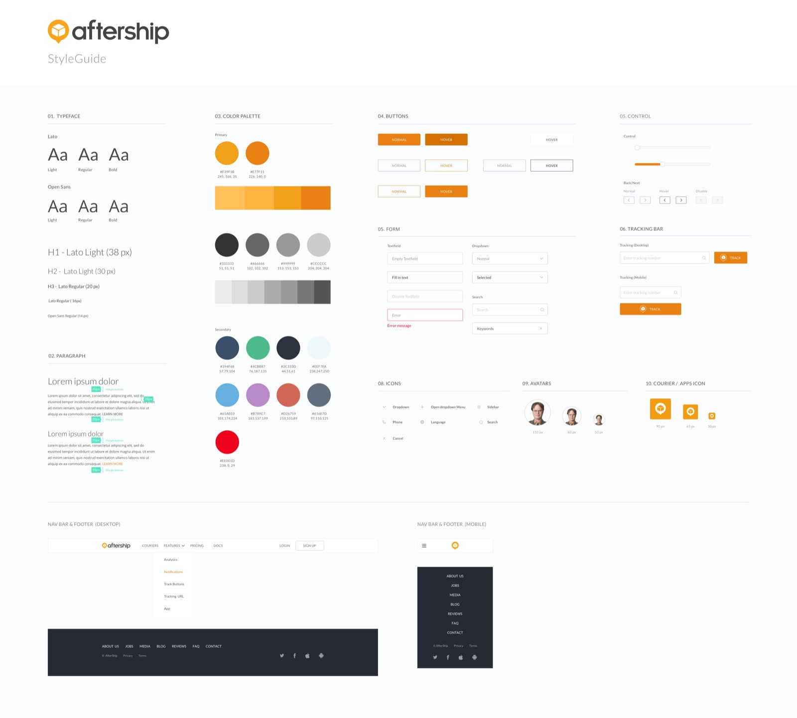
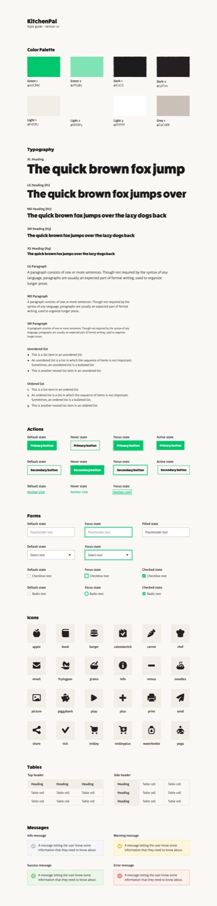
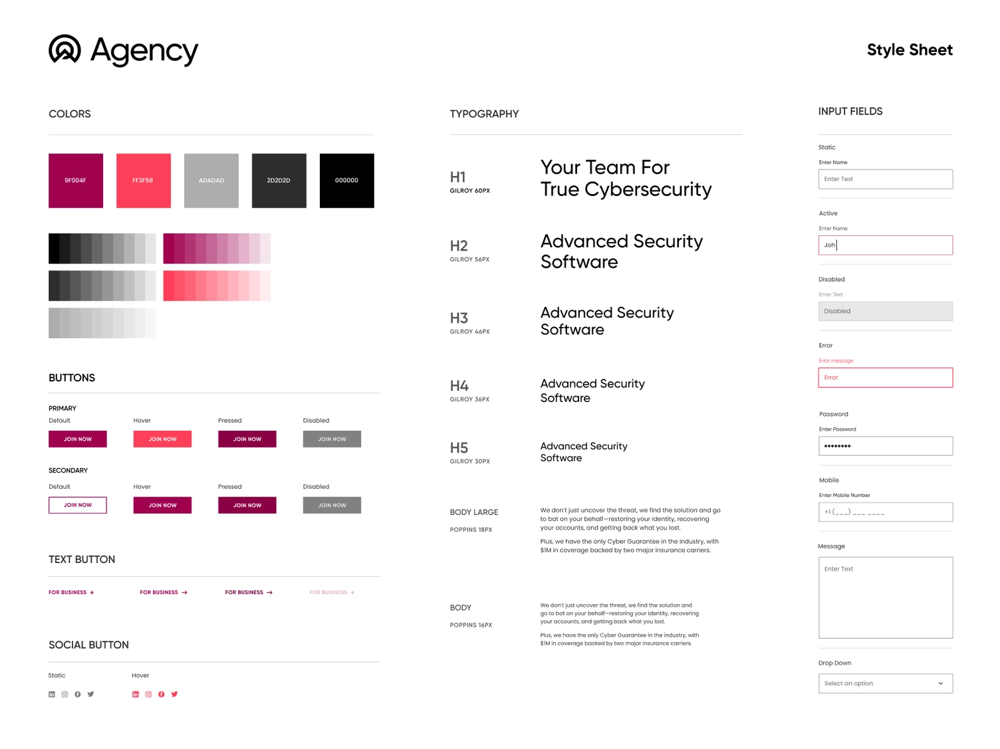

A style tile or style guide or brand guide is a 1-page document that allows a designer to communicate color styles, typography styles, and graphic element styles (i.e. photography, illustration, and/or icon styles). Oftentimes, if you are in a situation that calls for style tiles, you’ll want to present stakeholders with at least a couple of options so they can visualize the way the site or app may look. Style tiles are also used within design teams to ensure they’re not diving straight into UI without a plan. It shows that the decisions have already been made (often with the stakeholder), and allows a team to use the same styles throughout the product.
Style tiles include some or all of the following:
- logo
- brand keywords
- color style set approved by your mentor (including HEX or RGB codes, and the purpose of each color)
- typography (fonts, sizes, styles, and how to use each one)
- photography style or photo treatment guidelines
- icons and illustration style
Examples


